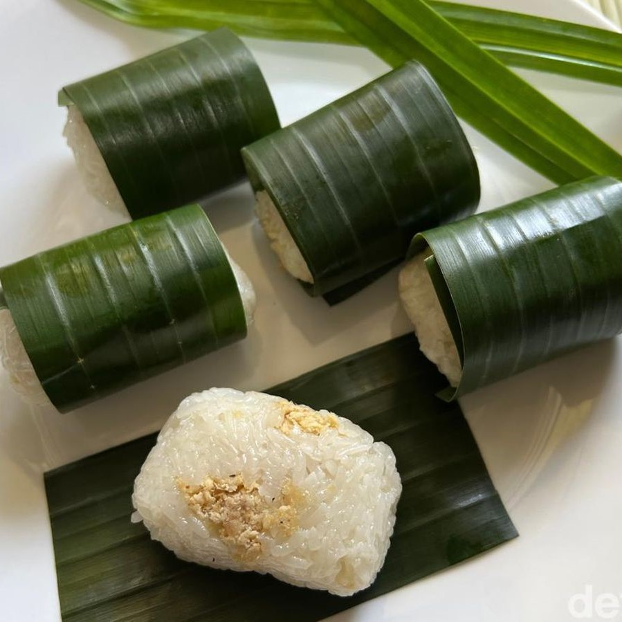

Resep bukan hanya untuk dibaca. Tetapi juga untuk dicoba. Mari kita coba!

Bahan :
Bahan Ketan :
Kelapa 1 buah
Beras ketan 1 kg
Garam 1 sdt
Bahan Abon :
Ayam 600 gram
Bawang putih 100 gram
Bawang merah 100 gram
Telur 250 gram (sekitar 4 butir)
Lada bubuk 1 sachet
Garam 1/2 sdt
Kaldu bubuk 1 sachet
Air 250 ml
Cara membuat :
Cuci beras ketan sampai bersih, kemudian rendam terlebih dahulu selama 1 jam.
Parut kelapa, lalu peras santannya dengan air. Kemudian rebus hingga mendidih.
Masak (kukus) ketan selama 30 menit.
Pindahkan ketan ke ember plastik. Tuangkan santan yang telah direbus, kemudian aduk dan masukkan kembali dalam kukusan.
Kukus kembali selama 20 menit.
Buat abon untuk isiannya :
-> Rebus ayam hingga matang, lalu dinginkan.
-> Ambili dagingnya, lalu haluskan dengan ulekan.
-> Tumis bawang putih dan bawang merah hingga agak layu.
-> Masukkan ayam yang sudah halus ke dalam tumisan, lalu aduk.
-> Masukkan air, telur, garam, lada bubuk, dan kaldu bubuk, lalu aduk hingga merata.
-> Masak hingga air tersisa sedikit, kemudian matikan kompor.
Setelah ketan dan abon telah masak, maka kepal ketan dan isi dengan abon sesuai selera. Ulangi hingga adonan habis.
Menurut perkiraan, 1 resep ini dapat menjadi 25 lemper.